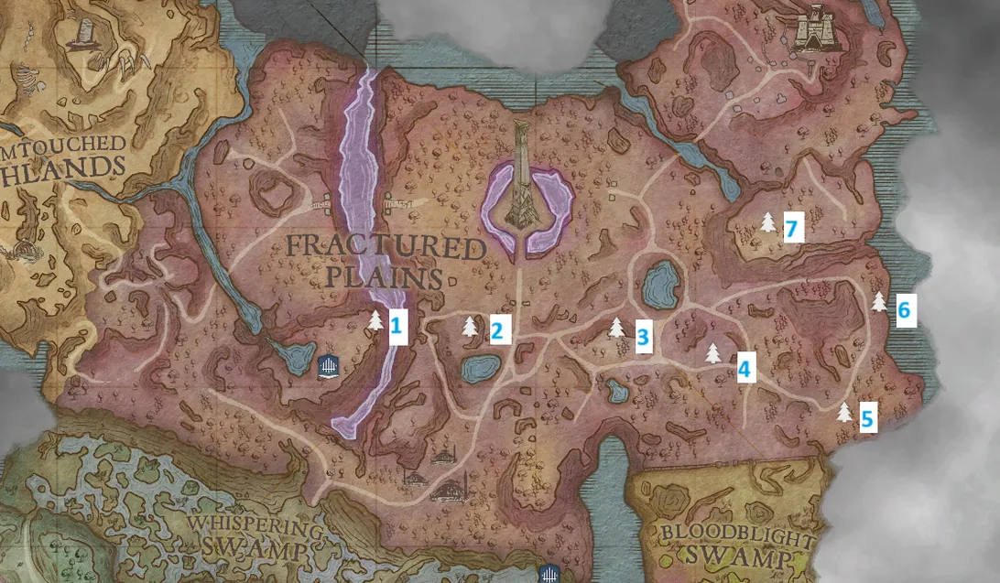

Heartstrings is a secondary quest that follows the story of Ceridwen, unnamed during the quest, leaving behind numerous stones spread across the area as they grieve their late human partner, Meya.
Overview
- Good armour and weapons
- Antipoison potions
- Air runes to cast Windstep
- Multiple garou
Walkthrough
You can start this quest by interacting with a glowing blue memorial stone found next to a unique Crystal Tree found in Crystalline Mesa, within the Fractured Plains region. The tree is on top of where the first Fractured Plains dungeon is located. You can get to the top by casting the Windstep spell a few times up the rocks to the right of the cave where you access that dungeon. Upon searching the first memorial stone, players will receive a crystal seed in their quest inventory.
Memorial Stone Locations (map)


There are a total of 7 memorial stones to be found, all in an eastward direction from the first. The memorial stones are located next to Crystal Trees, which are a unique variant of Anima Trees.
All quest progression points are therefore next to the unique trees with memorial stones. From the first tree, proceed eastward to find the next tree. As these trees are located in the open area of the Fractured Plains, it is recommended to be ready for combat with several wolves and garou that you will encounter during the quest.
Reaching the final tree and singing the song will complete the quest.
Rewards
- Crystal bow
- Recipe for crystal bow
Trivia
- The song written by the elf bard is in Welsh. The full translation can be found on the Ceridwen page.
This guide is the wiki's Heartstrings article, by its editors, reformatted for this site. Licensed CC BY-NC-SA 3.0.